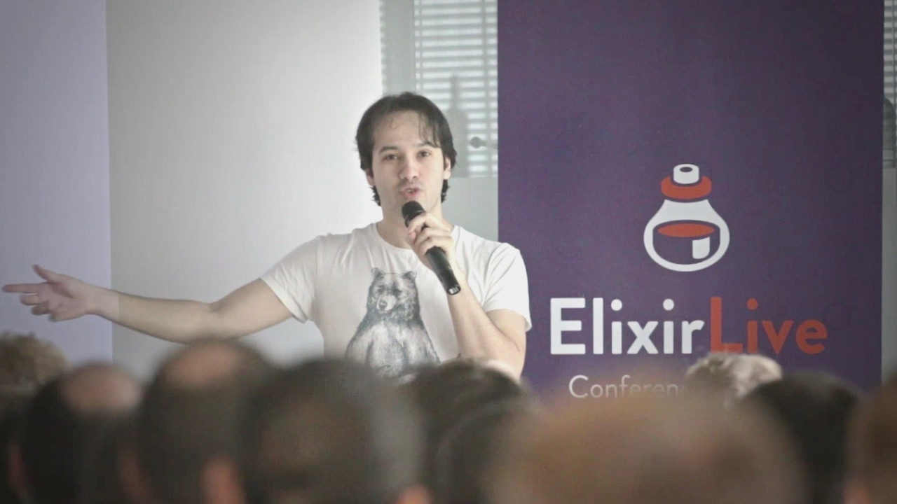

Acerca de nosotros
¿De qué vamos a hablar?
Total disponibilidad
Todo funciona, todo el tiempo
Alta disponibilidad
Casi todo funciona, casi todo el tiempo
Alta disponibilidad
Porcentaje de tiempo que el sistema no estuvo disponible durante el año.
| Disponibilidad | Tiempo no disponible en el año |
|---|---|
| 9,99% (3s nueves) | 8,77 horas |
| 9,95% (3s nueves cinco) | 4,38 horas |
| 9,999% (4 nueves) | 52,6 minutos |
| 9,9999% (5 nueves) | 5,26 minutos |
También vamos a hablar de Elixir
Joe Armstrong, Robert Virdring y Mike Williams, 1986

¿Cómo podemos programar sistemas que se comporten de forma razonable ante la presencia de errores?
Joe Armstrong, 2003, tésis de doctorado
José Valim, 2011
¿Cómo logras Alta Disponibilidad con Elixir?
Con procesos
Veamos un ejemplo
Demo
La única forma de comunicar procesos es mediante paso de mensajes

def pong do
receive do
{sender, :ping} ->
IO.puts("ping")
:timer.sleep(1_000)
send(sender, {self(), :pong})
end
pong()
end
def pong do
receive do
{sender, :ping} ->
IO.puts("ping")
:timer.sleep(1_000)
send(sender, {self(), :pong})
end
pong()
end
def pong do
receive do
{sender, :ping} ->
IO.puts("ping")
:timer.sleep(1_000)
send(sender, {self(), :pong})
end
pong()
end
def pong do
receive do
{sender, :ping} ->
IO.puts("ping")
:timer.sleep(1_000)
send(sender, {self(), :pong})
end
pong()
end
def ping do
receive do
{sender, :pong} ->
IO.puts("pong")
:timer.sleep(1_000)
send(sender, {self(), :ping})
end
ping()
end
def start do
ping_id = spawn(fn -> ping end)
pong_id = spawn(fn -> pong end)
send(pong_id, {ping_id, :ping})
{ping_id, pong_id}
end
Veamos como funciona en línea de comandos
Así se ven los procesos de un sistema real.
Los procesos son aislados
Demo
Let it crash!
La clave para tener software tolerante a fallos es descomponer los sistemas grandes en módulos, cada módulo será una unidad de servicio y una unidad de fallo. Un fallo en un módulo no se propaga más allá de dicho módulo.
Jim Gray, 1985, ¿Por qué las computadores se detienen y qué podemos hacer al respecto?
Sin embargo, en otras plataformas si algo falla en nuestra app, toda nuestra app falla.
¿Por qué tus apps no deberían funcionar de la misma forma?
¡Erlang es igualitario!
Los procesos no pueden monopolizar el CPU
Hablemos de el scheduler (planificador de tareas)
Pongamos un ejemplo
Un proceso podría bloquear al resto
¿Cómo funciona esto en Elixir?
Demo
Un proceso que use muchos recursos, no bloquea a los demás.
Es fácil encontrar procesos problemáticos
Demo
| 11 millones | usuarios concurrentes |
| 200,000 | personas en un mismo grupo |
Regresando a nuestra pregunta
¿Cómo podemos programar sistemas que se comporten de forma razonable ante la presencia de errores?
- Procesos pequeños y aislados
- Paso de mensajes
- Tolerancia a fallos
- Scheduler apropiativo
- Debugging fácil
Eso es Elixir!
Gracias
@AnayeliMalvaez
@ecamacho
Enlaces de referencia
- Slides
https://amcolin.github.io/commit_conf_elixir/#/ - Elixir
https://elixir-lang.org/ - Tésis de Joe Armstrong http://erlang.org/download/armstrong_thesis_2003.pdf
- The soul of Erlang and Elixir por Sasa Juric
https://www.youtube.com/watch?v=JvBT4XBdoUE - Proyecto Visualixir
https://github.com/koudelka/visualixir - Blog Discord
https://blog.discordapp.com